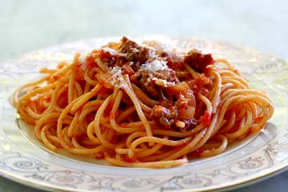

Habits
John Doe
November 30, 2013
In the morning
Getting up
Turn off alarm
Get out of bed
Breakfast
Eat eggs
Drink coffee
In the evening
Dinner
Eat spaghetti
Drink wine

picture of spaghetti
Going to sleep
Get in bed
Count sheep
My favourite recipe